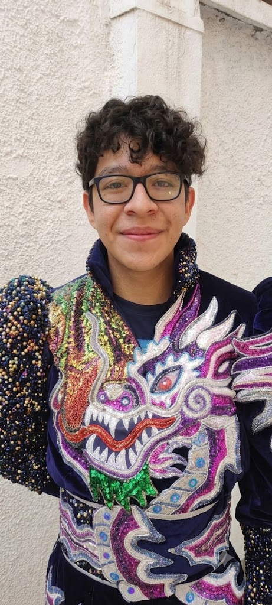
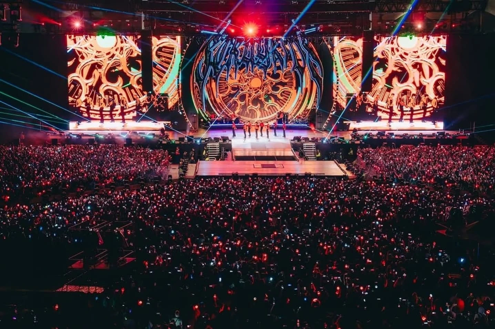
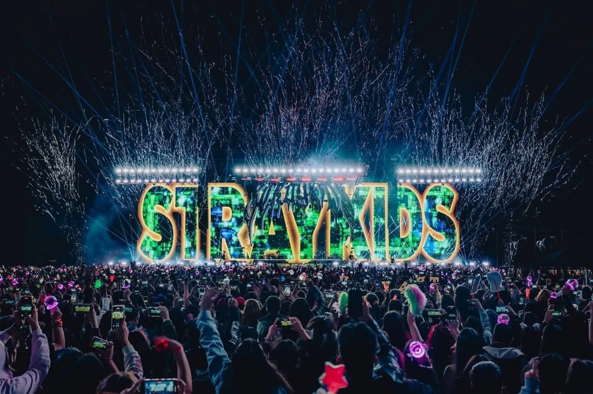

Presentación

Nombre: Ignacio Alejandro Gironás Perez
"Incluso si te pierdes un momento, lo estás haciendo bien."
Sobre mí
Soy una persona con metas claras y una gran determinación. Me considero bastante perfeccionista en lo que hago y me gusta asumir el liderazgo cuando hay retos por delante; me mueve el éxito y la motivación constante de superarme a mí mismo cada día.
Gustos e intereses
- KPop
- Series BL
- Videojuegos
- Wrestling
- Drag
Algo que me inspira: Stray Kids


Stray Kids representa para mí un recordatorio constante de que está bien caminar a mi propio ritmo y abrazar aquello que me hace diferente. Su música llegó a mi vida en los momentos más difíciles, convirtiéndose en un refugio y en un motor para seguir adelante. Ver la dedicación, la pasión y el esfuerzo que ponen en cada uno de sus proyectos, sumado a letras honestas que hablan sobre el crecimiento, las dudas y la autenticidad, me inspira a no tener miedo de ser yo mismo y a transformar cada desafío en fuerza para crear mi propio camino.
Qué quiero explorar
Quiero aprender a estructurar y dar vida a proyectos digitales desde cero, entendiendo la lógica detrás del código y experimentando con herramientas que me permitan traducir conceptos visuales en entornos web funcionales y atractivos.